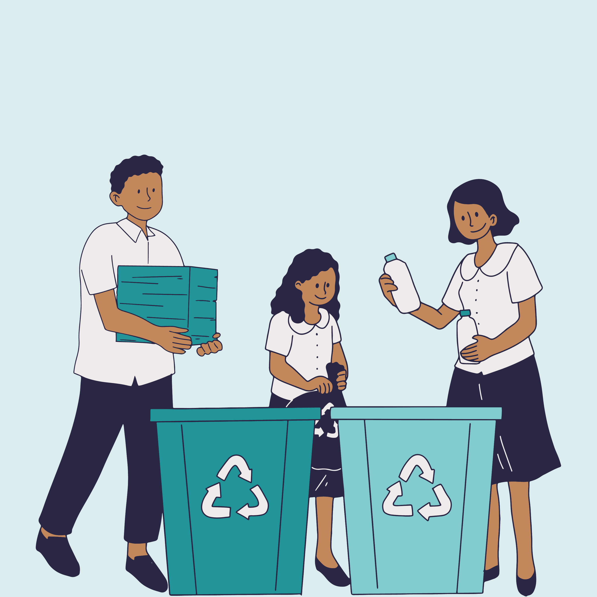

O mundo precisa de ajuda

Práticas Ecológicas
O nosso planeta tem sofrido com as escolhas que o ser humano toma a milhares de anos
e nem sempre foram boas decisões, mas ainda temos tempo de tornar o mundo melhor
seja não poluindo o meio ambiente e tornando-se pessoas mais empáticas.
Todos os dias vemos nas notícias sobre a poluição, seja na água, no ar ou até mesmo no solo, e sempre ficamos a par disso, Mas o que podemos fazer para diminuir essas impurezas?
Caminhar, andar de bicicleta, patins ou skate são ótimas formas de evitar a poluição atmosférica, evitando assim doenças respiratórias e o sedentarismo;
Reutilizar água e evitar o uso de agrotóxicos em plantações reduz a poluição do solo e a hídrica;

Descartar o lixo corretamente impede a contaminação dos lençóis freáticos;